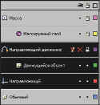

Flash 5. Шаг десятый: работа со слоями
В КГ №44 от 20.11.2001 г. мы уже вкратце коснулись темы слоев. Сейчас же
пришло время разобраться с этим вопросом более подробно.
Что такое слои,
думаю, объяснять подробно нет надобности, так как они встречаются практически
во всех графических редакторах. Не стал, конечно, исключением и Flash 5.
Следует сказать лишь, что слой — это ряд независимых или зависимых (в
зависимости от типа) изображений, которые, накладываясь друг на друга,
образуют итоговый вариант того, что мы видим.
Вообще слои во Flash
имеют несколько другое предназначение, нежели в других графических редакторах.
Конечно же, что-то общее есть, например, взаимное перекрытие объектов и так
далее, однако основная функциональная нагрузка у них несколько иная.
Всем
известно, что Flash славится возможностями, предоставляемыми для создания
анимации. Так вот, каждый слой можно анимировать в отдельности и своим
способом, что значительно облегчает и делает эффективнее работу.
Думаю, что
следует пояснить, почему лучше создавать многослоевую анимацию. Все очень
просто.
Представьте себе сложное изображение, где один объект,
допустим солнце, двигается по заданному пути, другой постоянно изменяет свою
форму, например прыгающий мяч, который не только движется, но еще и
деформируется в момент удара о землю, а рядом идет еще третий объект, например
человек.
Для того чтобы воссоздать описанную картину, придется делать
покадровую анимацию, причем каждый такой кадр придется продумывать тщательным
образом. Заметьте, что во Flash, если один объект был расположен над другим, а
после его сместили, то под ним остается пустое место, что абсолютно
неприемлемо.
Второй вариант заключается в том, что на одном слое вы можете
создать фон, который статичен и остается неизменным до конца фильма, на втором
слое будет солнышко — о том, как его создать и заставить двигаться по
заданному пути, рассказано в прошлой статье. На третьем слое пусть прыгает мяч
(об этом можно было прочитать в КГ №40 от 23.10.2001 г.). И, наконец, на
четвертом движется человек (хотя этот объект достаточно сложен, и для удобства
и его можно разбить на составляющие).
Благодаря тому, что фон каждого слоя
прозрачный, есть возможность накладывать один слой на другой так, чтобы
объекты на низлежащих слоях были видимы в промежутках между теми, которые
расположены выше.
Для работы со слоями предусмотрена специальная палитра,
представленная на рисунке. В прошлой статье мы уже рассмотрели вкратце
строение, а также некоторые возможности, предоставляемые ею. Сейчас же
остановимся на этом несколько подробнее.

Пиктограмма глаза. Под ней на
каждом слое расположена точка. Если она перечеркнута, то, следовательно, слой
невидим, как на слое "Направляющий движение".
Замок означает блокировку,
которая поставлена на том же слое. Это значит, что никакие преобразования на
этом слое в таком режиме не допустимы.
Цветные квадратики, расположенные
справа от каждого слоя, обозначают режим просмотра. Если они закрашены, как на
приведенном примере, то вы увидите объекты целиком; если щелкнуть по такой
пиктограмме, то заливка пропадет и рисунок будет представлен в контурном
виде.
В нижней части палитры располагаются три иконки, которые несколько
дублируют команды, которые будут рассмотрены ниже.
— Insert Layer —
пиктограмма с изображением страницы с плюсом. Щелкнув по ней, вы тем самым
создадите новый слой, расположенный над активным в момент создания.
• Add
Guide Layer — пиктограмма страницы с волнистой линией. С помощью данной
пиктограммы создается надслой, предназначенный для создания направляющих
путей.
• Delete Layer — пиктограмма с мусорной корзиной. Данная иконка
применяется для удаления ненужного слоя.
• Если щелкнуть правой клавишей
мыши по любому слою, то появится дополнительное меню, состоящее из команд,
позволяющих работать с палитрой и отдельными слоями в частности. Данное меню
состоит из следующих команд:
• Show All (Показать все). Данная команда
предназначена для того, чтобы сделать все слои сразу видимыми. Это очень
удобно, так как если изображение многослойное, то достаточно трудоемко
постоянно щелкать под пиктограммой глаза, особенно если необходимо увидеть
сразу все слои, чтобы просмотреть все изображение целиком.
• Lock Others
(Заблокировать остальные). Эта команда позволяет заблокировать все слои, то
есть повесить на них замок, кроме активного. Это очень полезная операция. Если
вы работаете над каким-либо объектом, расположенном на одном слое, то все
остальные лучше заблокировать, чтобы случайно не повредить уже сформированные.
Следует пояснить, что блокировка — это состояние, в котором на слое нельзя
ничего изменить.
• Hide Others (Скрыть все остальные). Эта команда чаще
используется в совокупности с первой. Она позволяет скрыть все слои, кроме
активного. Если вы работаете над одним слоем, то, возможно, остальные могут
вам помешать, поэтому, может быть, их лучше временно скрыть, а когда
понадобится посмотреть итоговый результат — выполнить первую из рассмотренных
команд, а именно Show All (Показать все).
• Insert Layer (Вставить слой).
Данная команда позволяет создавать новый слой, причем она аналогична щелчку по
пиктограмме внизу палитры. Обратите внимание, что новый слой всегда
располагается над активным.
• Delete Layer (Удалить слой). Эта команда
позволяет удалить активный слой. Она дублирует возможность, предоставляемую
пиктограммой мусорки, расположенной в правой нижней части палитры.
•
Properties (Свойства). При помощи данной команды открывается диалоговое окно
Layer Properties (Свойства слоя), в котором можно выполнить следующие
операции:
— Name (Имя). В этой графе следует указать наиболее удобное имя.
Не игнорируйте данный параметр, так как если слоев много, то, просто исходя из
нумерации, разобраться достаточно тяжело, поэтому лучше давать понятные
имена.
— Сделать невидимым (видимым) слой, активизировав (отключив)
параметр Show (Показать).
— Заблокировать или, наоборот, освободить слой,
поставив или убрав птичку возле параметра Lock (Заблокировать).
— Изменить
тип слоя, а именно: Normal; Guide; Guided; Mask; Masked.
• Outline Color
(Цвет линий). Здесь следует выбрать цвет, которым будут представляться объекты
при просмотре слоя в режиме линий.
• View Layer as Outlines (Показывать
слой в режиме линий). Эта команда предназначена для преобразования просмотра
слоя из обычного режима в режим линий и наоборот.
• Layer Height (Высота
слоя). Если по каким-либо причинам вам удобнее, чтобы слой в палитре был
увеличен по высоте, то здесь необходимо указать насколько.
• Guide
(Направляющий слой). Операция превращения данного слоя в направляющий. Дальше
мы остановимся на таких слоя более подробно.
• Add Motion Guide (Ввести
направляющую движения). Таким образом создается новая направляющая движения к
активному слою.
• Mask (Маска). Для преобразования текущего слоя в маску
следует выбрать эту команду.
• Show Masking (Показать маскирование).
Следует отметить, что маскирующий слой невиден, но если необходимо ввести в
него какие-либо изменения, то следует воспользоваться данной командой.
Если
изображение состоит из множества слоев, то вполне возможно в них запутаться, и
как следствие анимация во одном слое может получиться несколько
несогласованной с анимационным рядом в другом. Для того чтобы было удобнее
работать, следует обратиться к временной шкале и установить там режим Preview
(Предпросмотр), выбрав его из раскрывающегося списка команд, который
появляется при щелчке по безымянной пиктограмме со стрелкой вниз,
расположенной в верхнем правом углу временной шкалы. Вообще подробнее вопрос
временной шкалы будет затронут в одной из следующих статей.
После того, как
будет включен данный режим, работать станет значительно удобнее и всегда можно
проследить, какие изображения на разных слоях соответствуют друг другу в
определенный момент времени.
В начале данной статьи было упомянуто о
нескольких различных видах слоев, о чем и пойдет сейчас речь более
подробно.
Guide Layers (Направляющие слои). Направляющие слои — это
обычные слои, которые, однако, не выводятся при печати. Они служат
вспомогательным материалом. На них можно создавать линии, объекты, которые
будут служить направлением, вспомогательной сеткой при создании и
редактировании непосредственно самого изображения. Можно в общих чертах
набросать анимационный ряд, то есть создать своего рода эскиз, который после
прорабатывать на основных слоях.
Направляющие слои в палитре обозначаются
синей рейсшиной (на рисунке — это слой, который называется
"Направляющий").
Обратите внимание на то, что любой слой можно
преобразовать в рассматриваемый тип, для чего достаточно щелкнуть по нему
правой клавишею мыши и после в раскрывшемся списке команд выбрать Guide
(Направляющий).
Motion Guides (Направляющие движение). Это слой, который не
может существовать отдельно, так как он определяет траекторию движения
объекта, расположенного на так называемом родительском слое, к которому,
собственно говоря, он прикреплен.
Слой такого типа не может быть
преобразован в анимационный ряд или обычный слой.
Создание слоя,
направляющего движения, состоит в активизации слоя с объектом, который будет
перемещаться по пути, после чего следует щелкнуть по нему правой клавишею мыши
и из раскрывшегося меню выбрать Add Motion Guide (Ввести направляющую
движения). На рисунке такой слой называется "направляющий движение".
При
создании траектории, по которой следует перемещать объект, используйте
инструмент Pencil (Карандаш).
Mask (Маска). Это особый тип слоя, который
предназначен для скрытия отдельных фрагментов изображения. Более подробно о
них мы поговорим в статье, посвященной созданию, редактированию и работе с
масками. На рисунке слой такого типа называется "Маска".
Если необходимо
изменить порядок следования слоев, то поменяйте их местами при помощи простого
перетаскивания мышью. Для того чтобы дать новое имя, достаточно щелкнуть по
старому двойным щелчком левой клавишею мыши, а после ввести
новое.
Копирование со слоя на слой производится так же, как и везде, а
именно: для того чтобы копировать элемент, необходимо сперва выделить его, а
после нажать сочетание клавиш Ctrl + C или проделать Edit->Copy
(Редактировать->Копировать); а для того чтобы вставить на новое место —
Ctrl + V или Edit->Paste (Редактировать ->Вставить).
Немного
отличается копирование нескольких кадров. Для этого необходимо, как, впрочем,
и везде, выделить ряд кадров. Далее выбрать команду Copy Frames (Копировать
кадры) или нажать сочетание клавиш Ctrl + Alt + C.
Выделите новый кадр, в
который необходимо вставить только что скопированные, и выполните Past Frames
(Вставить кадры) или Ctrl + Alt + V.
На этом рассмотрение слоев, пожалуй,
можно и закончить. О том, как работать со слоями-масками, как уже было сказано
ранее, будет отдельная статья. В любом случае советую не пренебрегать слоями,
так как они могут не только значительно облегчить жизнь, но и уменьшить размер
изображения, что очень важно, если учесть, что работы такого рода обычно
создаются под Internet.
Галина
Корабельникова